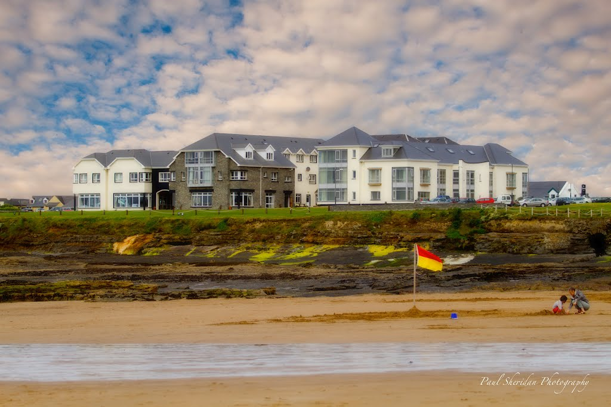
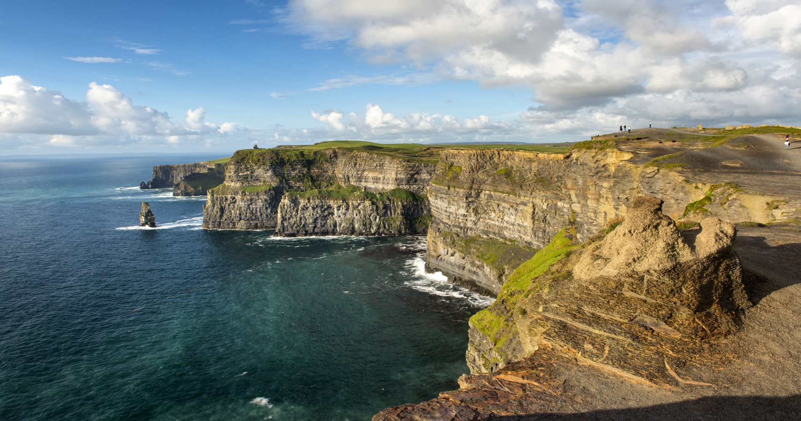
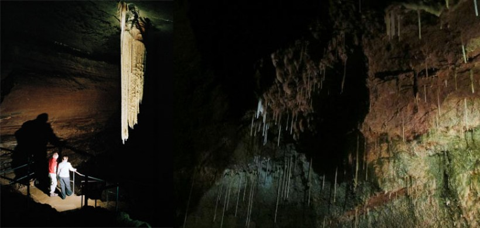
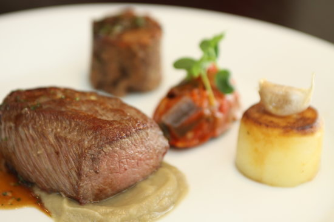

It’s the perfect location - Spanish Point in Co Clare epitomises what the Wild Atlantic Way is all about - vast skies over breathtaking Atlantic views, salt breezes whetting the appetite for an abundance of local seafood, walking the nearby Cliffs of Moher or a short spin to the Burren or Loop Head. The breathtaking bedroom views; or dining in The Ocean Bar, Johnny Burkes Bar or The Pearl Restaurant; the sensory delights of the freshest seafood paired with locally sourced vegetables and their own homemade pantry products - desserts, jams, breads....
Beyond the grounds of the Cliffs of Moher Visitor Experience you can now explore a new 20km coastal walking trail in Clare which will bring you along one of the most outstanding landscapes of Ireland. From LIscannor and Hags Head in the south, along by the majestic Cliffs of Moher and to Doolin in the North, with views over Aill Na Searrach, the Aran Islands and Galway Bay. Nature’s wonders surround you at the Cliffs of Moher. The trail follows the line of the cliffs and passes through the grounds of the visitor centre. With a due-west exposure, sunset is the best time to visit.
Doolin Cave is home to the Great Stalactite. At 7.3 metres (23feet) it is the longest free-hanging stalactite in the Northern Hemisphere. The Great Stalactite, suspended from the ceiling like a chandelier, is truly astounding. Visitors can hardly believe that it was formed from a single drop of water over thousands of years. Extend the adventure from underground to over ground following a charming Farmland Nature Trail that takes a looped walk around the cave setting. The nature trail is home to indigenous species of flora along with rare and miniature breeds of animals/ More
VL Restaurant at Vaughan Lodge Lahinch has a reputation for fine food and seafood, and provides the village’s premier fine dining venue. They focus on the classics and present them in a modern twist. They are always trying to balance pure fine dining with popular local tastes. The food is balanced and well presented. Quality ingredients are sourced locally and from afar. Let the food and its provenance do the talking!! They are blessed with a plentiful supply of fish locally from Carrigaholt. Supply often varies from day to day but will often include Halibut, Hake, Scallops, Langoustine, Lobster and other local specials each day.
